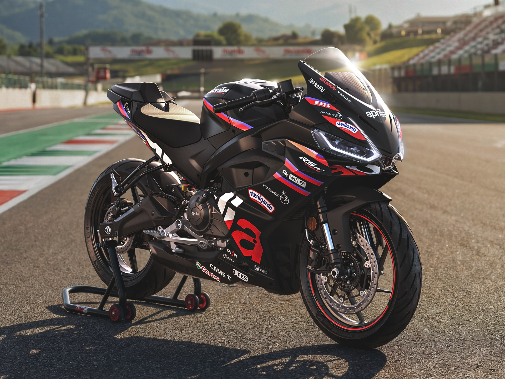

Historie Aprilia
Aprilia byla založena v roce 1945 Albertem Beggio v italském Noale nedaleko Benátek. Původně firma vyráběla jízdní kola, ale v 50. letech přešla na mopedy a motocykly. Jméno Aprilia pochází z latinského slova pro duben — měsíc, kdy byla firma pravděpodobně zaregistrována.
V 70. a 80. letech se Aprilia prosadila v závodním sportu, zejména v motokrosu a off-road závodech. V roce 1992 získala Aprilia první titul mistra světa v třídě 125cc a od té doby sbírá světové tituly pravidelně. Celkem má Aprilia na kontě přes 54 světových závodních titulů.
V roce 2004 byla Aprilia začleněna do skupiny Piaggio, která vlastní také značky Moto Guzzi, Vespa a Gilera. Toto spojení přineslo finanční stabilitu a možnost sdílet technologie. Model RSV4 z roku 2009 je považován za jeden z nejlepších supersportů všech dob — získal ocenění nejlepší motocykl roku hned v prvním roce výroby.
Dnes Aprilia aktivně závodí v MotoGP a patří mezi top týmy. Tovární jezdci pravidelně bojují o stupně vítězů a značka se vrátila mezi světovou špičku. Italský závodní duch je v každém motocyklu Aprilia jasně cítit.
Novinky 2025
Aprilia RS 660 dostala pro rok 2025 nový quickshifter, výrazně vylepšené nastavení odpružení Öhlins a nový systém cornering ABS. Nový Tuareg 660 Travel Edition rozšiřuje adventure nabídku o větší nádrž a cestovní vybavení.
Tovární tým v MotoGP pokračuje s vývojem nového RS-GP stroje. Aprilia patří mezi nejrychleji se zlepšující týmy v paddocku a ambice na titul mistra světa jsou reálné.